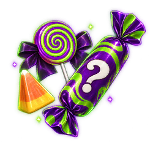

Medizin
Gegenstände · MedizinÜberraschungsbonbon
Mystery Candy

Mystery Candy / MedizinWirkung
Beschaffung
BeschaffungNoch keine Informationen zur Beschaffung verfügbar.
Gegenstandsbeschreibung
Süßes oder Saures? Ein Bissen, eine Überraschung.